---
{
  "layout": "note",
  "title": "Bessel's Equation_Part1",
  "journal": true,
  "section": "Study",
  "topic": "Engineering Mathematics",
  "excerpt": "심장박동의 Pulsatile Flow 의 유동해석 (주기적으로 움직이는 심박에 의한) (혈액 속도장 계산) 과정속에서, 뜬금없이 Bessel \bfunction 이 등장해버렸다. (베셀 함수의 1종 해) 이 친구는 학부시절, 열전달 (",
  "classes": "wide",
  "permalink": "/blog/mechanical-engineering/engineering-mathematics/bessels-equation-part1/",
  "study_area": "Mechanical",
  "date": "2024-09-26",
  "source_url": "https://jeffdissel.tistory.com/101",
  "header": {
    "teaser": "/blog/mechanical-engineering/engineering-mathematics/bessels-equation-part1/images/img-001.png"
  }
}
---
{% raw %}<p>심장박동의<br />
Pulsatile Flow<br />
의 유동해석<br />
(주기적으로 움직이는 심박에 의한)<br />
(혈액 속도장 계산)<br />
과정속에서,<br />
뜬금없이<br />
Bessel function<br />
이 등장해버렸다.<br />
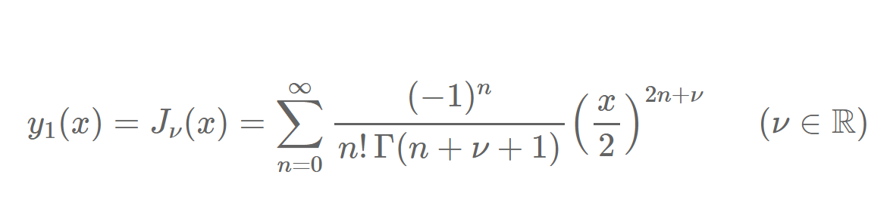<br />
(베셀 함수의 1종 해)<br />
이 친구는 학부시절,<br />
열전달 (전도) 시간에 잠깐 등장했었지만,<br />
교수님께서, 이런 함수 기억나지??<br />
공학수학때 배웠었짢아 하고 넘어갔던 기억이 있다.<br />
(물론 공학수학에서, 이런게 있다 이랬던 것 같다.)<br />
이번 블로그 글로<br />
정복해보자.</p>
<hr />
<p>먼저,<br />
Bessel's Equation은<br />
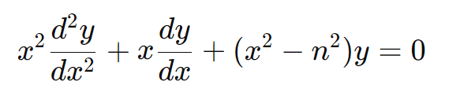<br />
(second-order linear ordinary differential equation)<br />
처럼 생겼다.<br />
문제는, 저렇게 생긴 함수가 실제 공학문제에서 많이 등장하는 것이다.<br />
ex1)<br />
공학수학 책에서 살짝 언급했던 case는 바로<br />
2D circular Membrane of Drumhead<br />
둥근 드럼의 파동의 움직임을 나타내는 방정식.<br />
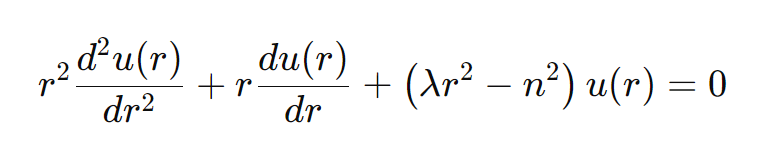<br />
ex2)<br />
헬름 볼츠 방정식<br />
(파동방정식)<br />
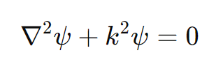<br />
ψ: scalar or vector function<br />
k: wave number<br />
(<br />
r<br />
,<br />
θ<br />
,<br />
z<br />
) coordinate에서<br />
laplace 연산자를 풀어주면.<br />
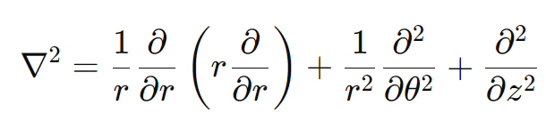<br />
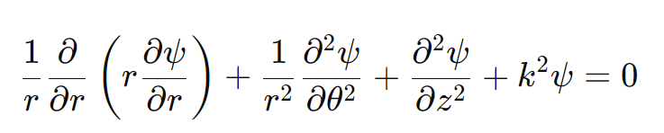<br />
이후에, 공학수학에서<br />
ODE풀던 방식 그대로<br />
Separation variable 방식을 사용한다.<br />
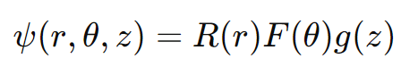<br />
넣고 전개를 진행하면, radial component에서 bessel eq이 등장한다.<br />
결론적으로, bessel equation이 생각보다 많이 등장하는 것을 확인하였고,<br />
이제 solution을 구해보자.</p>
<hr />
<p>베셀 함수 같은 경우, 양변을 x^2로 나눠주면,<br />
x = 0 에서 발산하는 방정식임을 확인 할 수 있다.<br />
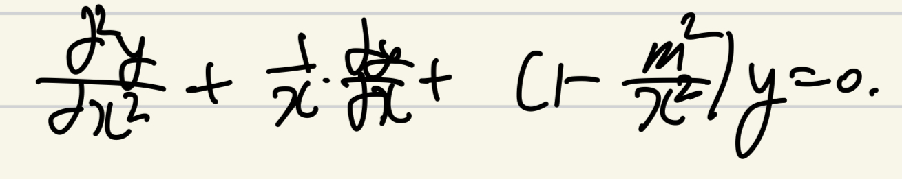<br />
발산하는 구간이 없는 경우, 우리는 ODE 공학수학 시간에,<br />
테일러 급수를 사용하여,<br />
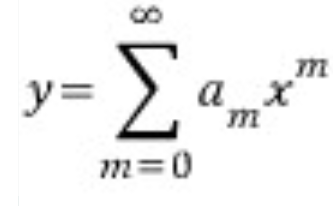<br />
해를 구하였다. 하지만, 이를 대입해도<br />
분모의 x를 제거하지 못하여 발산함을 알 수 있다.<br />
이를 해결하는 방법이 바로<br />
프로비니우스의 해법<br />
이다.<br />
밑에처럼, 테일러 급수 해의 형태에<br />
x^s를 추가로 곱해주는 형태의 해.<br />
(임의의 실수 s)<br />
이제, 가정한 해로 미분을 진행한 후 대입해주자.<br />
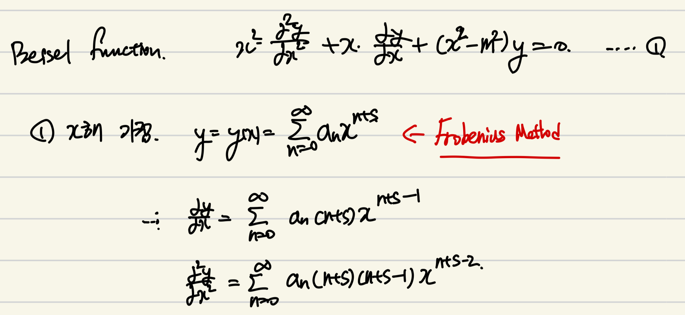<br />
이제 대입.<br />
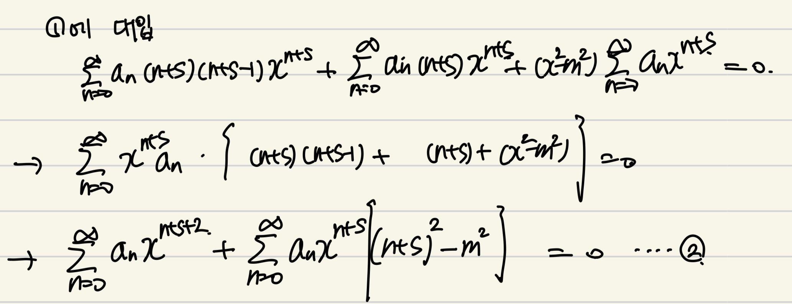<br />
이제, 가정한 해를 기존 bessel equation에 대입해주면,<br />
2번 식이 유도된다.<br />
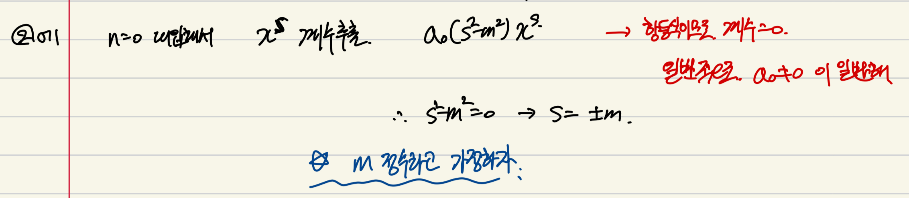<br />
이후에 가장 낮은 차수인 x^s의 계수를 추출해주고,<br />
항등식이므로 계수 = 0 식을 세우면,<br />
일반해로<br />
s = +m or -m 이 도출된다.<br />
이후, m이 정수라고 가정하고 들어가보자.<br />
(정수 아닐때도 추후에 살펴보자)<br />
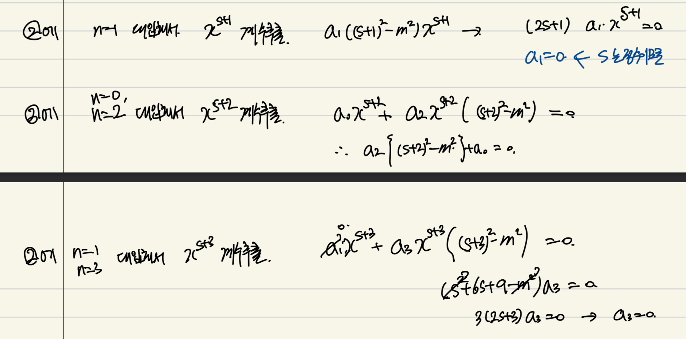<br />
계속해서, x^s, x^(s+1),.. 들의 계수 = 0 식을 세워보면,<br />
규칙이 보이기 시작한다.<br />
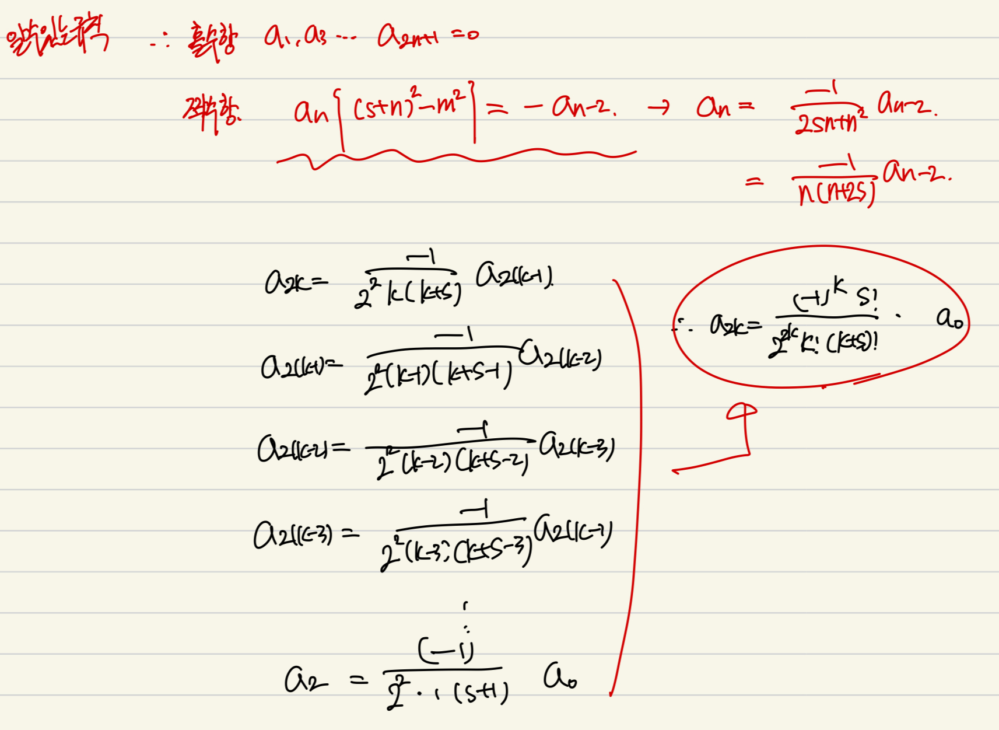<br />
a홀수항 = 0 , 짝수항은 규칙적으로 곱해지는 것.<br />
따라서, 모든 a들을 기존 가정했던 해에 대입해주자.<br />
(a 홀수항 사라지고, 짝수항은 특정규칙)<br />
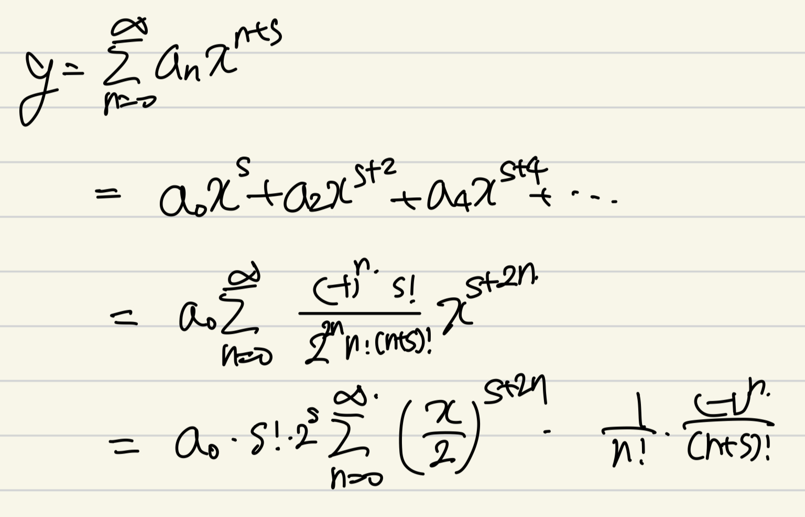<br />
여기서, s = +m, -m (정수)인 경우를 먼저 살펴보면.<br />
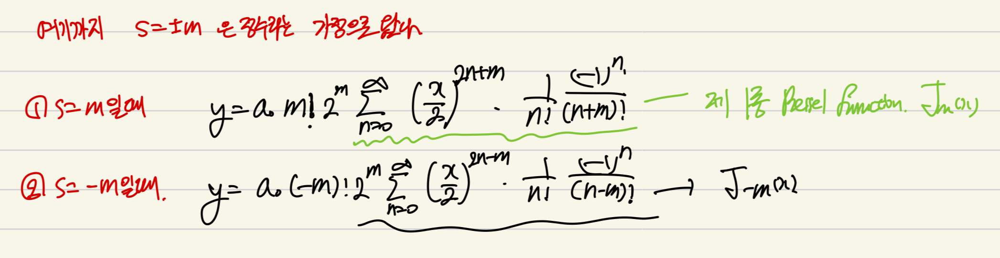<br />
여기서 드디어, Bessel function이 derived 된다.<br />
여기서, 감마함수의 성질을 이용하여.<br />
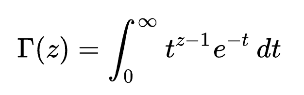<br />
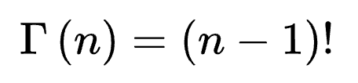<br />
<br />
<br />
(n 이 자연수일때)<br />
다음과 같이 나타낼 수 있다.<br />
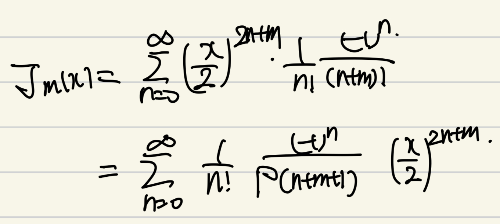<br />
자 여기서 우리는 ODE의 두 해를 구했고,<br />
이들의 합으로 일반해를 구하면 된다.<br />
(일반적인 ODE의 해)<br />
하지만, 그전에<br />
두해가<br />
Linearly independent or dependent<br />
인지 확인해야한다<br />
m 이 정수일때 J-m(x) 를 살펴보자.<br />
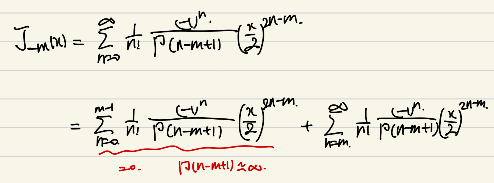<br />
여기서 핵심은 감마함수는<br />
x 가 음의정수, 0 일때 발산한다는 것.<br />
따라서,<br />
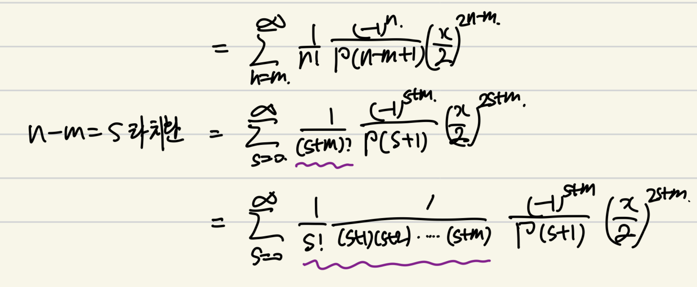<br />
뒷항 만 남게 되고, 치환을 한 후에<br />
펙토리알 부분을 쪼개주자.<br />
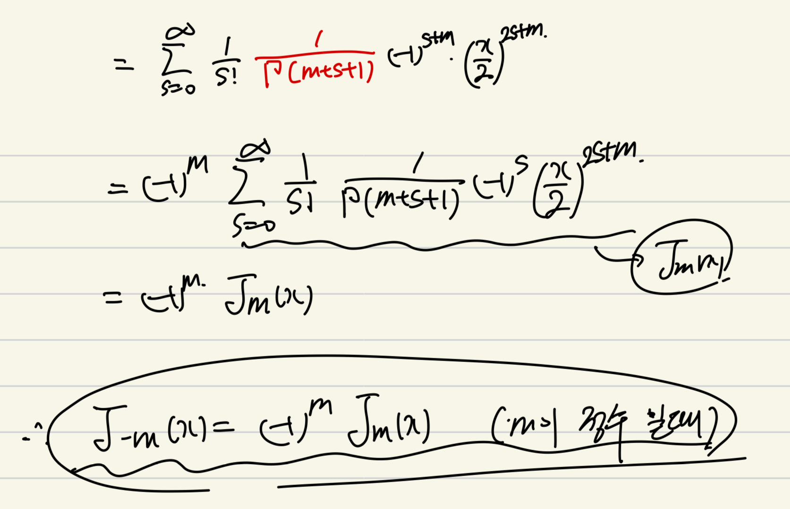<br />
쪼갠 팩토리알 부분을 감마함수에 넣으면,<br />
마법같이 Jm(x)가 등장하게 된다.<br />
결론적으로 m이 정수일때는<br />
Jm(x), J-m(x) 두 해가 서로 linearly dependent하다는 것.<br />
따라서,<br />
y = a Jm(x) + b J-m(x)<br />
(a,b는 상수)<br />
이렇게 베셀함수의 일반해를 나타낼 수 없다.<br />
여기서, 해결책으로<br />
제2종 bessel 함수<br />
가 등장하게 된다.<br />
다음과 같이, Jm(x) 와 J-m(x)의 선형조합으로 나타내어<br />
bessel 방정식의 해가 된다는 것은 자명하다.<br />
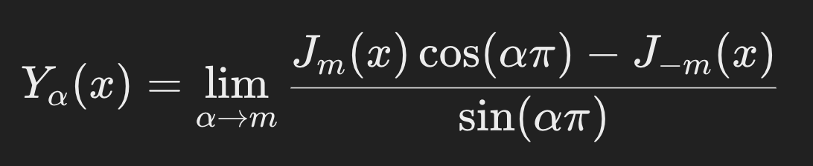<br />
결론적으로, 다음과 같이 정의하면<br />
Jm(x) 와 Ym(x)는<br />
선형독립으로<br />
(사실 선형독립이 되도록 정의한거임)<br />
y = C1 Jm(x) + C2 Ym(x)<br />
형태로 베셀 방정식의 일반해를 나타낼 수 있다.<br />
너무 길어진 관계로 다음 포스터에서<br />
1. Jm(x), Ym(x) 가 선형독립<br />
2. m 이 정수가 아닐때, 베젤 함수의 해<br />
두가지에 대해서 다뤄보겠습니다.</p>{% endraw %}
